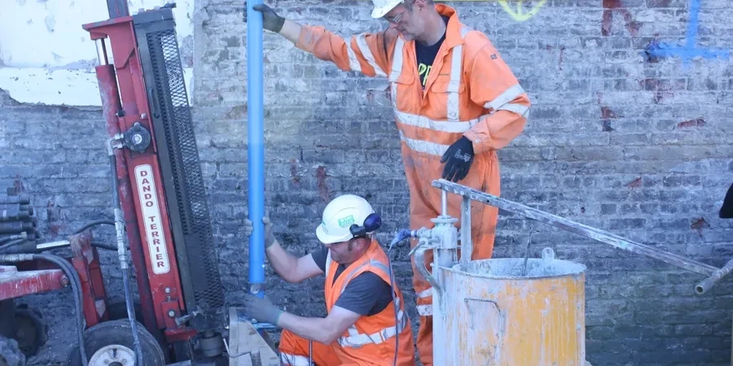

Our San Bernardino office delivers comprehensive geotechnical services tailored to the unique demands of the Inland Empire. From site characterization and subsurface investigation to foundation design and construction monitoring, we provide integrated solutions that ensure project success. We use consolidated regional experience to navigate local conditions, delivering code-compliant reports supported by calibrated laboratory equipment. Whether you are planning a commercial development, residential subdivision, or infrastructure project, our team offers the technical depth and local knowledge required for safe and efficient outcomes. Explore our approach to soil mechanics study and expansive soil evaluation as part of our full-service capability.

Technical reference image — San Bernardino
Methodology and scope
San Bernardino sits within the San Bernardino Valley, a geologically complex region shaped by the San Andreas Fault system and alluvial deposition from the San Bernardino Mountains. The subsurface typically consists of Quaternary alluvium, including poorly graded sands, silty sands, and gravels, often interbedded with clay layers from ancient lake deposits. These alluvial fans and floodplain deposits can vary significantly in thickness and compaction, requiring careful site-specific investigation. Groundwater is generally deep in the valley floor, but localized perched aquifers may occur near mountain fronts or along the Santa Ana River. Seismic hazards are a primary concern, with potential for strong ground shaking, liquefaction in saturated loose sands, and lateral spreading near the fault zone. Collapsible soils are also present in some areas, particularly where alluvial fans contain loose, dry sands that may settle upon wetting. Our site response analysis directly addresses these seismic considerations, ensuring designs account for local amplification effects.
Local considerations
Our team brings consolidated regional experience to San Bernardino, having completed numerous projects across the Inland Empire. We maintain a calibrated laboratory that performs all standard and advanced geotechnical tests in-house, ensuring rapid turnaround and quality control. Our engineers work closely with local building departments and contractors to navigate city-specific requirements and permitting processes. By combining technical expertise with practical knowledge of local geology and construction practices, we deliver cost-effective solutions that meet the highest standards of safety and reliability.
All our work in San Bernardino adheres to US geotechnical standards, primarily ASTM methods for laboratory and field testing, such as ASTM D1586 for Standard Penetration Test (SPT) and ASTM D2487 for soil classification. Foundation design follows the International Building Code (IBC) with local amendments, referencing ASCE 7-22 for seismic loads and ACI 318 for concrete elements. For retaining walls and slopes, we apply the latest AASHTO LRFD specifications where applicable. Our reports are prepared in strict compliance with these codes, providing defensible, peer-reviewed recommendations.
Frequently asked questions
What are the most common soil challenges in San Bernardino?
San Bernardino's alluvial soils often present variability in density and grain size, with loose sands prone to liquefaction during seismic events. Collapsible soils are also a concern in some areas, where dry sands can settle rapidly when saturated. Additionally, expansive clays may be encountered in localized deposits, requiring special foundation design. Our site-specific investigations identify these issues early.
How does the San Andreas Fault affect geotechnical design in San Bernardino?
The San Andreas Fault runs near San Bernardino, making seismic design critical. We evaluate fault rupture hazards, ground shaking amplification, and liquefaction potential per ASCE 7-22. Projects near active traces may require setback studies or special foundation systems. Our analyses incorporate probabilistic seismic hazard assessments and site-specific response spectra to ensure safety.
What building codes apply to geotechnical work in San Bernardino?
Geotechnical work in San Bernardino follows the California Building Code (CBC), which is based on the IBC with state-specific seismic amendments. We adhere to ASTM testing standards and use ASCE 7-22 for seismic loads. Local jurisdictions may also have additional requirements for hillside development or floodplain areas. Our reports are always code-compliant.
Do you provide geotechnical services for hillside developments in San Bernardino?
Yes, we have extensive experience with hillside projects in the San Bernardino Mountains and foothills. These sites often require slope stability analysis, retaining wall design, and debris flow evaluation. We address challenges like steep terrain, shallow bedrock, and seasonal groundwater. Our team coordinates with geologists and civil engineers to deliver safe, buildable solutions.